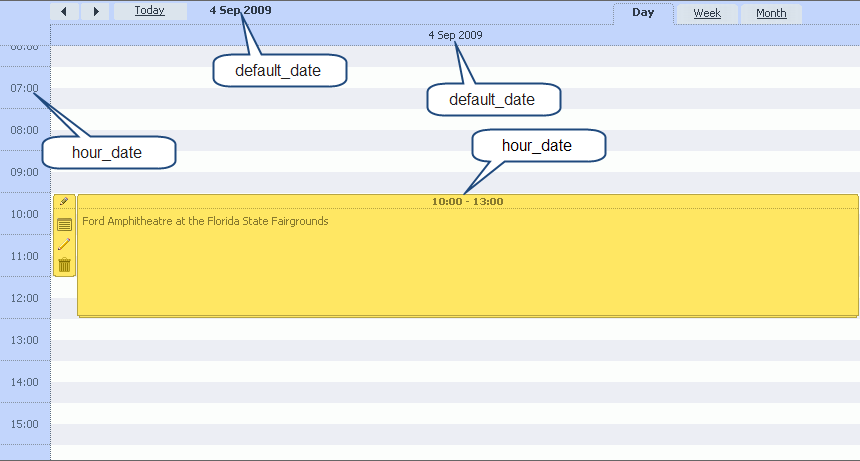
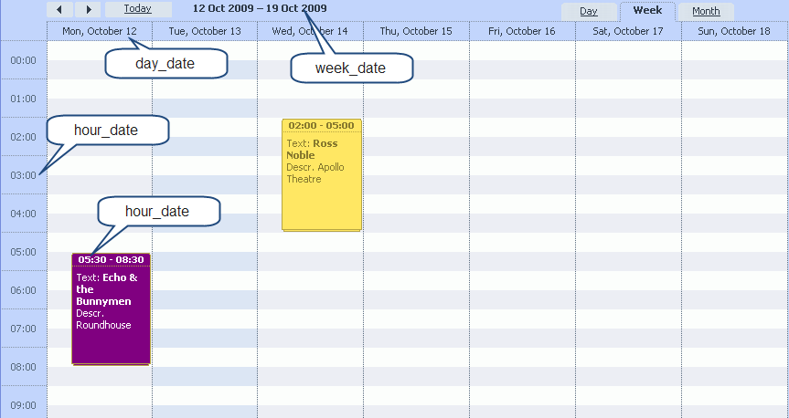
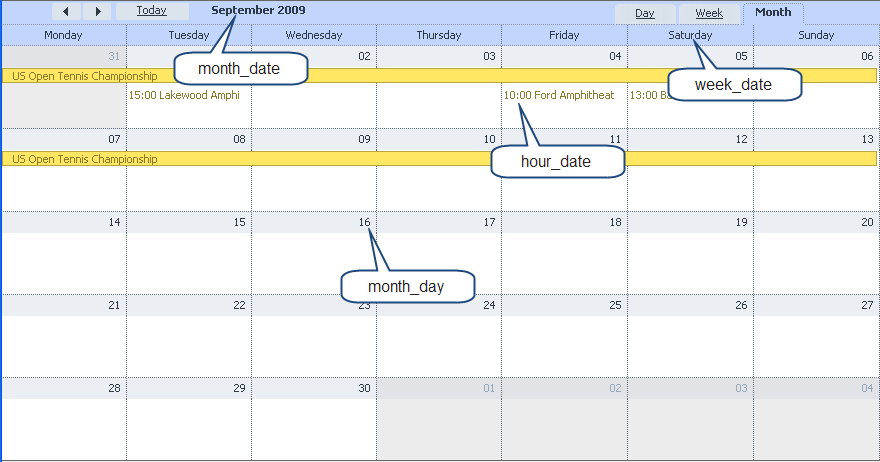

Configuration options
Details of date formatting convention
Configuring layout elements and hotkeys
Configuring 'details form'
Date configuration
- scheduler.config.default_date - {string} header of day and week views;
- scheduler.config.month_date - {string} header of month view;
- scheduler.config.week_date - {string} subheader, days of week in month view;
- scheduler.config.day_date - {string} subheader, day label in day and week views;
- scheduler.config.hour_date - {string} vertical scale for day and week views;
- scheduler.config.month_day - {string} each day block in month view;
- scheduler.config.api_date - {string} used to set dates in events using api methods.
- scheduler.config.xml_date - {string} used to define format of data in data xml
  
Scales
- scheduler.config.hour_size_px - {numeric} height of 1 hour in pixels;
- scheduler.config.time_step - {numeric} minimal date size step in minutes;
- scheduler.config.start_on_monday - {boolean} if true week starts from Monday ( if false, week start from Sunday);
- scheduler.config.first_hour - {numeric} hour from which day and week scales start;
- scheduler.config.last_hour - {numeric} hour from which day and week scales end.
- scheduler.config.limit_time_select - {boolean} adjust time selects to first ahd last hour settings
- scheduler.config.scroll_hour - {numeric} hour which will be at top of screen, after view mode update
- scheduler.config.mark_now - {boolean} when it set to true, day and week view will have marker, which show current time
Control
- scheduler.config.readonly - {boolean} if set to true - events in scheduler can't be created|changed|deleted; 1)
- scheduler.config.show_loading - {boolean} shows the progress during data loading, useful for dynamic loading mode
- scheduler.config.drag_resize - {boolean} allows resizing events by dnd;
- scheduler.config.drag_move - {boolean} allows moving events by dnd;
- scheduler.config.drag_create - {boolean} allows creating new events by dnd;
- scheduler.config.dblclick_create - {boolean} allows creating new events by double click;
- scheduler.config.edit_on_create - {boolean} shows form on new event creation;
- scheduler.config.details_on_create - {boolean} uses extended form on new event creation by drag or by dbl-click (option doesn't affect monthly view - where details form is the only way to change data);
- scheduler.config.details_on_dblclick - {boolean} uses extended form on event double-click (double-click on existing event).
Others
- scheduler.config.server_utc - {boolean} if enabled component will convert server side dates from utc to local timezone, and backward during data sending to server;
- scheduler.config.positive_closing - {boolean} if outside click occurs during form edit, then form will be saved and event will be updated.
- scheduler.config.update_render - {boolean} if set to true - each time when item updated - all view will be refreshed instead of updated item only (it allows smooth size recalculation but much more cpu consuming)
- scheduler.config.multi_day - {boolean} enables rendering of multi-day events in daily and weekly views
- scheduler.config.full_day - {boolean} if set to true - entry fields in 'Time period' section of details form are blocked, and time period is set to a full day from 0.00am the current cell data till 0.00am next day.2)
- scheduler.config.event_duration - {integer} used to set the initial duration of the event. 3)
- scheduler.config.auto_end_date - {boolean} if set to true - when you change start event time or date, the end event time and date will be changed automatically in order to make the event duration value 60 minutes 4)
- scheduler.config.drag_lightbox - {boolean} when set to true lightbox can be dragged by header, it is enabled by default
- scheduler.config.preserve_scroll - {boolean} when set to true current scroll position is preserved when navigating between dates on the same view, it is enabled by default 5)
Selection Menus
- scheduler.config.icons_edit=[“icon_save”,”icon_cancel”] - this collection stores buttons which are visible in edit menu;
- scheduler.config.icons_select=[“icon_details”,”icon_edit”,”icon_delete”] - this collection stores buttons which are visible in selection menu.